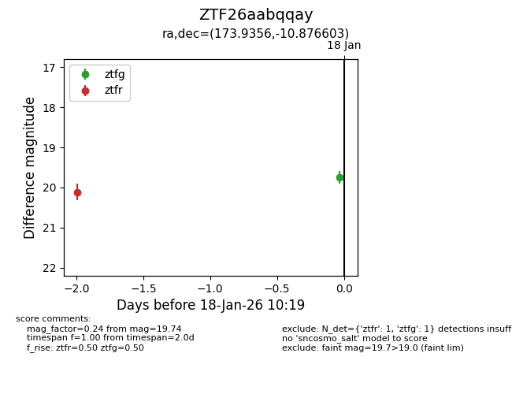
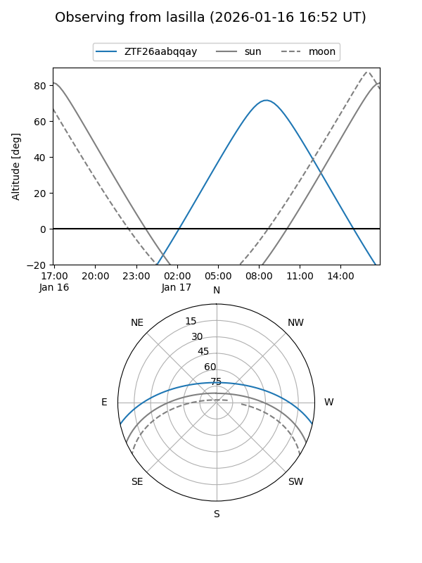
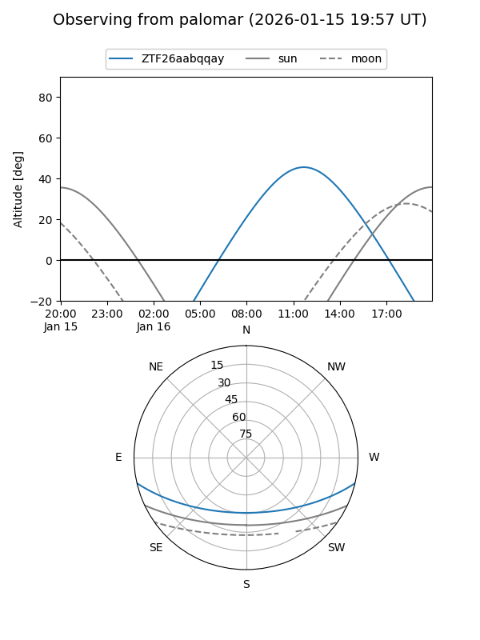

ZTF26aabqqay
Target ZTF26aabqqay at 2026-01-18 10:20
Aliases and brokers:
FINK: link
Lasair: link
ALeRCE: link
alt names
ZTF26aabqqay (ztf,fink_ztf)
Coordinates:
equatorial (ra, dec) = 173.9356,-10.87660
equatorial (HMS+DMS) = 11:35:44.55,-10:52:35.77
galactic (l, b) = (274.6333,+47.79272)
Flags:
Photometry:
last ztfg=19.74, ztfr=20.12
1 ztfg, 1 ztfr detections
Lightcurve

Visibility


Additional plots